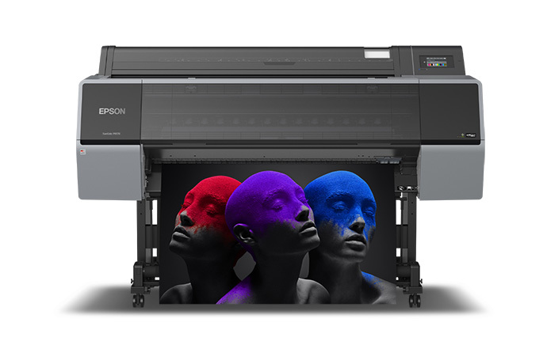
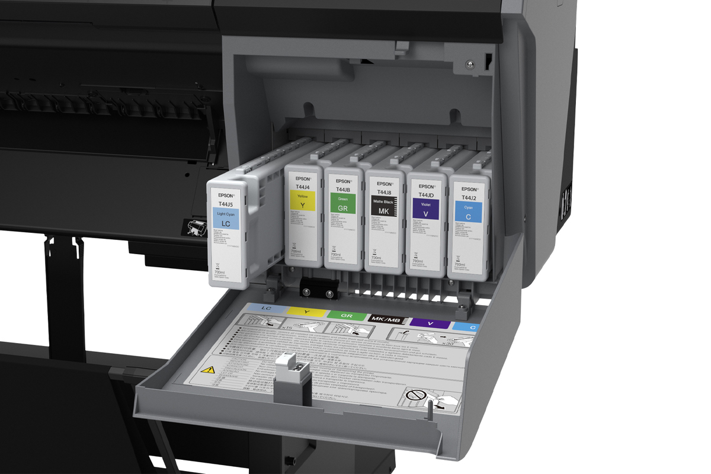
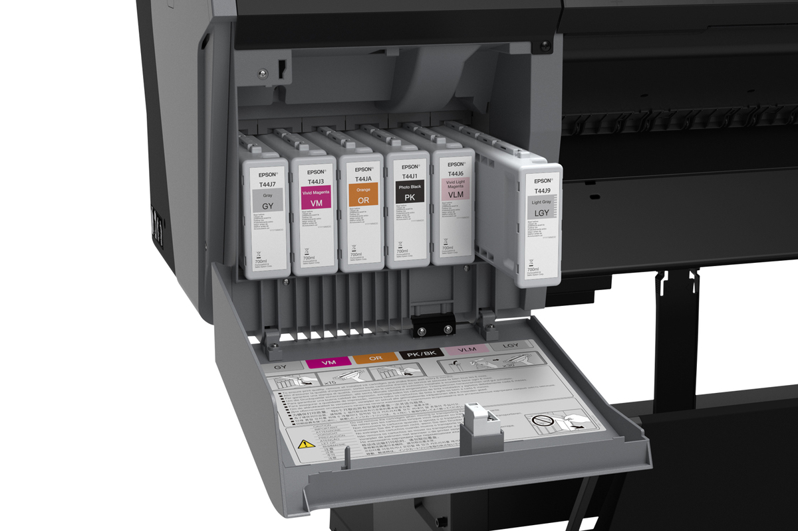

Flexografia y offset
EPSON
Serie SureColor para entornos donde la precisión de color es prioritaria.
GMG / SKO
Papel orientado a cromalines con calidad certificada y respaldo técnico.
Mejor costo
Propuesta enfocada en calidad profesional al mejor precio posible.
Impresoras e insumos para cromalines con calidad certificada.
Flexo Vision se especializa en soluciones para impresión de cromalines perfilados, con foco en impresoras Epson SureColor, insumos de alto rendimiento y papel sin abrillantador óptico para pruebas confiables y consistentes.

Primer foco comercial
Al ingresar, el visitante entiende rápido que Flexo Vision vende impresoras,
insumos y papel certificado para cromalines en flexografia y offset.
Productos principales
La primera etapa del sitio pone el foco en los dos productos clave del catálogo: la impresora Epson SureColor P9570 y el papel sin abrillantador óptico para cromalines.

Producto destacado
Epson SureColor P9570
Equipo orientado a flujos de trabajo donde la estabilidad de color, la presentación profesional y la confiabilidad en pruebas impresas son esenciales.
- Ideal para cromalines perfilados en flexografia y offset.
- Solución pensada para estudios de color, preprensa y trabajos con calidad certificada.
- Respaldada con ficha técnica descargable para evaluación comercial.
Consumible premium
Papel sin abrillantador óptico
Papel de alta calidad para cromalines, elegido para quienes necesitan un soporte estable, profesional y alineado con exigencias de certificación.
- Sin abrillantador óptico para una lectura de color más consistente.
- Certificaciones asociadas a GMG y SKO.
- Propuesta de valor: mejor calidad al mejor precio.
¿Para qué sirve esta solución?
La página comunica de forma directa el uso principal de los productos, para que el cliente correcto se identifique de inmediato con la propuesta de Flexo Vision.
Materiales orientados a cromalines que exigen consistencia y previsibilidad antes de pasar a producción.
Soluciones para entornos donde el control visual del color y la repetibilidad son parte del flujo técnico y comercial.
Soporte para procesos que requieren presentar pruebas impresas con aspecto profesional y respaldo técnico.
Tintas Epson UltraChrome PRO12
Según la ficha técnica corregida de la Epson SureColor P9570, la línea utiliza 12 colores y cuenta con referencias específicas por capacidad. A continuación se muestran los códigos de cartucho de 700 mL junto con fotos de los cartuchos del equipo.


| Color | Código 700 mL |
|---|---|
| Photo Black | T44H120 |
| Cyan | T44H220 |
| Vivid Magenta | T44H320 |
| Yellow | T44H420 |
| Light Cyan | T44H520 |
| Vivid Light Magenta | T44H620 |
| Gray | T44H720 |
| Matte Black | T44H820 |
| Light Gray | T44H920 |
| Orange | T44HA20 |
| Green | T44HB20 |
| Violet | T44HD20 |
Confianza técnica
Materiales pensados para estándares exigentes.
El papel ofrecido por Flexo Vision se presenta como una opción premium para cromalines, sin abrillantador óptico y con foco en certificaciones reconocidas dentro del sector.
Certificación GMG
Certificación SKO
Soporte para cromalines
Flexo Vision pone primero el producto y la confianza técnica.
Esta primera versión de la web está pensada para presentar con claridad qué vende la empresa: impresoras para cromalines, insumos para impresión profesional y papel premium certificado para flexografia y offset.